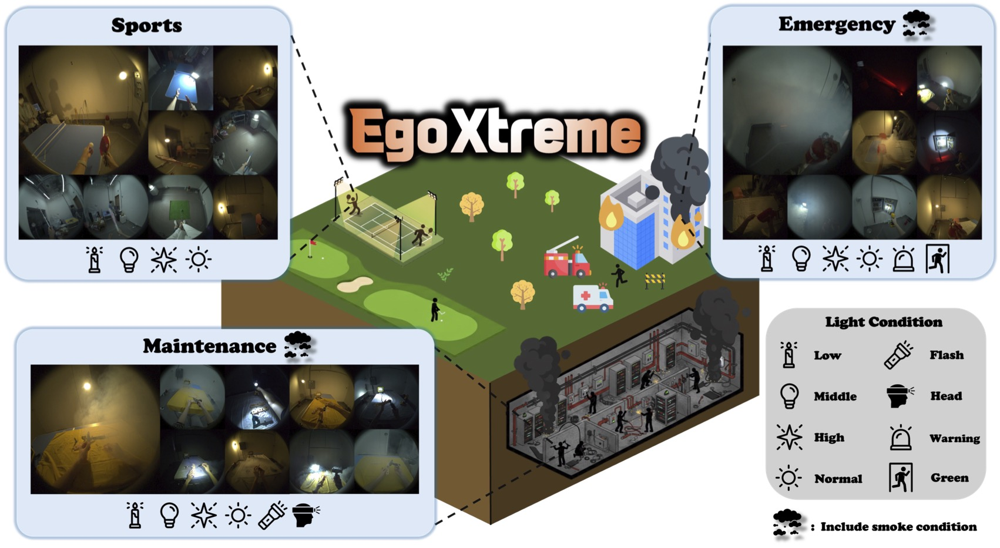
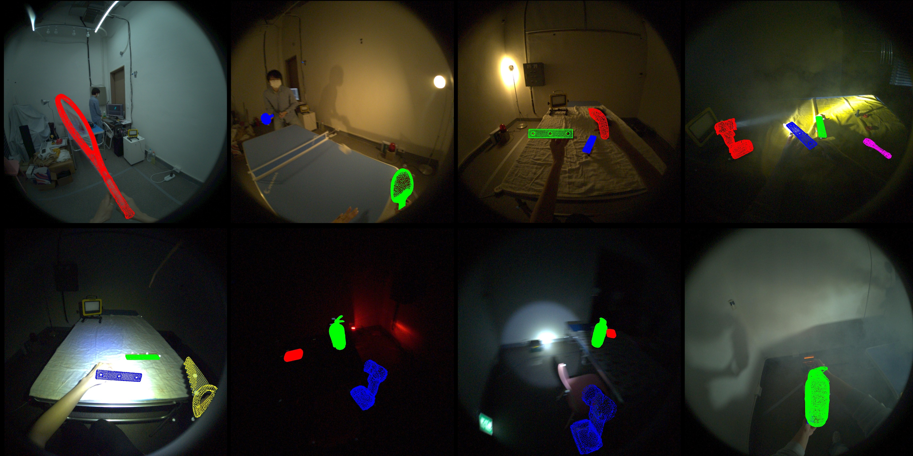
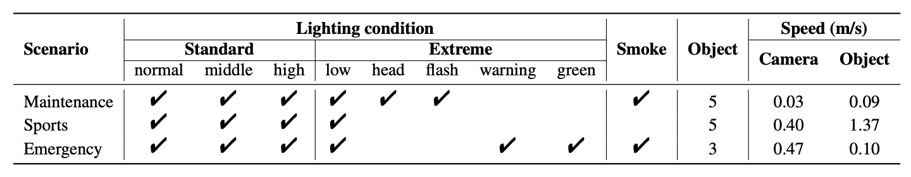
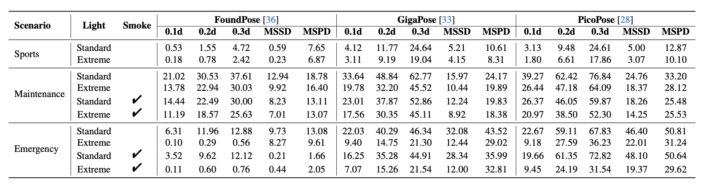

EgoXtreme is a novel, large-scale dataset designed for robust egocentric 6D object pose estimation under extreme conditions. Specifically, 8 illumination conditions are used across three scenarios, and smoke is included in specific scenes. These conditions, combined with severe motion blur, make accurate 6D object pose estimation extremely challenging.
EgoXtreme is specifically designed to tackle extreme environmental conditions in egocentric views. The dataset introduces highly challenging factors such as fast motions, diverse illumination changes, and smoke. Below are the sample sequences captured under these practical scenarios.

Maintenance
Maintenance (Smoke)
Sports
Emergency
Emergency (Smoke)
The EgoXtreme dataset features 13 objects divided into three distinct scenarios. Below are the 3D models used for 6D pose annotation and evaluation.
We evaluated recent state-of-the-art 6D object pose estimation models, focusing on RGB-only zero-shot approaches on the EgoXtreme benchmark. As shown below, while existing models perform reasonably well under standard conditions, their performance drops significantly under the extreme factors (e.g., motion blur, low light, and smoke). This highlights the highly challenging nature of our dataset and leaves significant room for future research.

To download the train and validation dataset, please download the data here.
To download the test dataset (without GT), please download here.
For detailed information of the data format and structure, please check our GitHub repository.
@inproceedings{egoxtreme2026,
title={EgoXtreme: A Dataset for Robust Object Pose Estimation in Egocentric Views under Extreme Conditions},
author={Yoon, Taegyoon and Han, Yegyu and Ji, Seojin and Park, Jaewoo and Kim, Sojeong and Kwon, Taein and Kim, Hyung-Sin},
booktitle={Proceedings of the IEEE/CVF Conference on Computer Vision and Pattern Recognition (CVPR)},
year={2026}
}